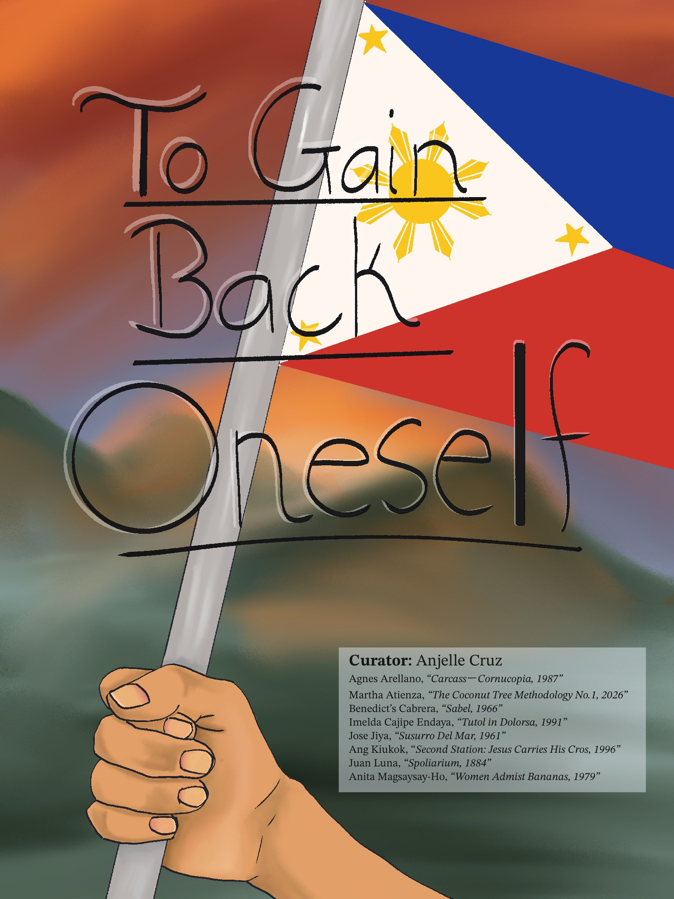

Natalie and James Thompson Gallery, San Jose
October 1, 2026 to October 31, 2026
The eight artists I have chosen are well known or making a name for themselves. They use different types of media from paintings to sculpture to even installations that discuss different topics expanding the lifestyle of women, religion based, and bringing attention to environments or political struggles.
Three main countries that colonized the Philippines are Spain, America, and Japan. Spaniards ruled for about three hundred years making them have those most effect on Filipino language, architecture, religion, and cultural practices. Before Roman Catholicism became the dominant religion many Filipino communities practiced Anitism, an indigenous animist tradition grounded in the belief that spirits inhabit mountains, rivers, trees, and the sky.
Rather than presenting colonization as the sole framework through which the Philippines can be understood, I would like to emphasize the richness and complexity of Filipino lifestyle. The exhibition is shaped by a personal investigation of heritage and intersectionality. The recognition of cultural knowledge can become distant for Filipinos raised outside the country and how art can provide a good means upon returning to, questioning, and understanding that inheritance.
The exhibition includes work by four living artists. Agnes Arellano’s Carcass-Cornucopia, 1987 is a sculpture made from cold-cast marble, unhulled rice, metal hooks, and abaca rope. A woman hangs by her feet while a baby emerges from the womb and rice and organs spill outward. The work evokes images of birth, nourishment, vulnerability, and sacrifice.
Martha Atienza is represented by The Coconut Tree Methodology No. 1, 2026 with her exquisite installation to address climate changes, coastal erosion, rising sea levels, and changing societal and fishing structures in the Bantayan Islands of Cebu, Philippines.
Benedicto Cabrera, also goes by BenCab, represented by Sabel, 1966, an oil painting from his well-known Sabel series. The work depicts a woman wrapped in white fabric. It reflects Cabrera’s recurring interest in figures enclosed by swirling, bundled textiles and capes.
Imelda Cajipe Endaya’s Tutol ni Dolorosa, 1991 depicts a woman cloaked in the attire of the Virgin Mary. The painting addresses imposition of Catholic ideology during Spanish colonization and the erasure of pre-colonial culture associated with that process. “Tutol” means to object or protest. The work’s title can even be translated as The Protest of Dolorosa. Endaya is the first woman to receive the distinction of National Artist of the Philippines for Visual Arts.
The exhibition further includes works by four artists who are no longer living: Anita Magsaysay-Ho, Ang Kiukok, Jose Joya, and Juan Luna. Magsaysay-Ho’s Women Amidst Bananas, 1979 reflects her longstanding interest in women engaged in daily tasks and her incorporation of Cubist influence. The presentation also features Kiukok’s Second Station: Jesus Carries His Cross, 1996, Joya’s Susurro del Mar, 1961, and Luna’s Spoliarium 1884.
Together with the works I propose on Filipino art as a space where religious traditions, historical violence, indigenous knowledge, and ordinary experience remain in active conversation.